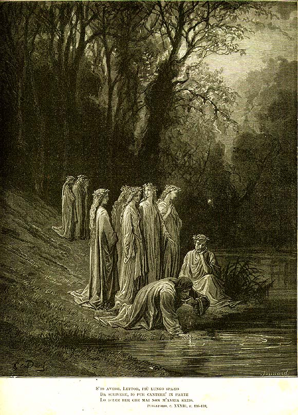

Песнь 33 из 33
Пророчество. Эвноэ — «готов подняться к звёздам»

Кратко
Девы оплакивают поруганную колесницу пением «Deus, venerunt gentes». Беатриче пророчит грядущего избавителя — таинственного «пятьсот пятнадцать» (DXV), который сокрушит блудницу и гиганта и восстановит правду. Она наказывает Данте запомнить виденное и передать живым. Наконец Мательда ведёт его к Эвноэ; испив её воды, Данте оживляет память о всяком добре и выходит обновлённым — «чистым и готовым подняться к звёздам». Этим словом — «звёзды» — кантика и завершается.
Главные моменты
- Загадочное пророчество о «DXV» — грядущем восстановителе справедливости.
- Наказ хранить и поведать живым всё увиденное.
- Питьё из Эвноэ — оживление памяти о добре.
- Финал: «puro e disposto a salire a le stelle» — «чистый и готовый взойти к звёздам».
Значение
Завершение очищения и порог Рая; как все три кантики, «Чистилище» кончается словом «звёзды».